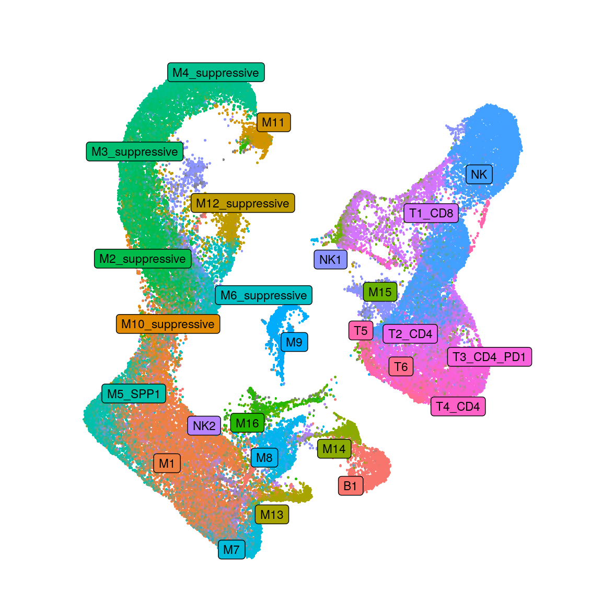
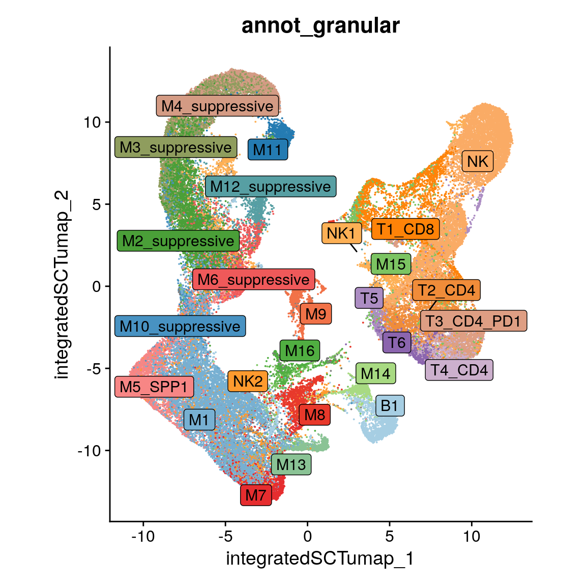
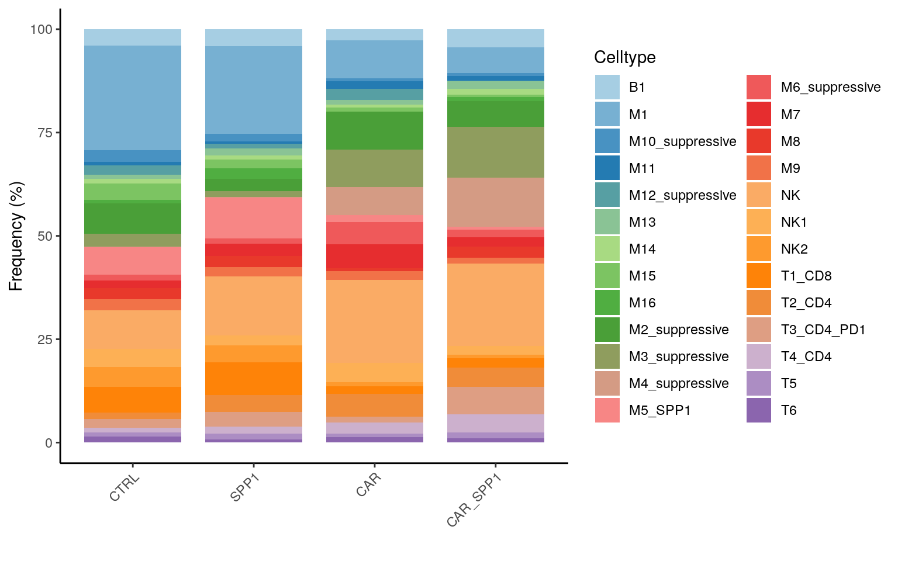

Last updated: 2025-10-27
Checks: 5 2
Knit directory: ~/SPP1_mouse_scRNAseq/
This reproducible R Markdown analysis was created with workflowr (version 1.7.1). The Checks tab describes the reproducibility checks that were applied when the results were created. The Past versions tab lists the development history.
The R Markdown file has unstaged changes. To know which version of
the R Markdown file created these results, you’ll want to first commit
it to the Git repo. If you’re still working on the analysis, you can
ignore this warning. When you’re finished, you can run
wflow_publish to commit the R Markdown file and build the
HTML.
Great job! The global environment was empty. Objects defined in the global environment can affect the analysis in your R Markdown file in unknown ways. For reproduciblity it’s best to always run the code in an empty environment.
The command set.seed(20250102) was run prior to running
the code in the R Markdown file. Setting a seed ensures that any results
that rely on randomness, e.g. subsampling or permutations, are
reproducible.
Great job! Recording the operating system, R version, and package versions is critical for reproducibility.
Nice! There were no cached chunks for this analysis, so you can be confident that you successfully produced the results during this run.
Using absolute paths to the files within your workflowr project makes it difficult for you and others to run your code on a different machine. Change the absolute path(s) below to the suggested relative path(s) to make your code more reproducible.
| absolute | relative |
|---|---|
| /home/hnatri/SPP1_mouse_scRNAseq/ | . |
| /home/hnatri/SPP1_mouse_scRNAseq/code/CART_plot_functions.R | code/CART_plot_functions.R |
| /home/hnatri/SPP1_mouse_scRNAseq/code/colors_themes.R | code/colors_themes.R |
Great! You are using Git for version control. Tracking code development and connecting the code version to the results is critical for reproducibility.
The results in this page were generated with repository version 9eead96. See the Past versions tab to see a history of the changes made to the R Markdown and HTML files.
Note that you need to be careful to ensure that all relevant files for
the analysis have been committed to Git prior to generating the results
(you can use wflow_publish or
wflow_git_commit). workflowr only checks the R Markdown
file, but you know if there are other scripts or data files that it
depends on. Below is the status of the Git repository when the results
were generated:
Ignored files:
Ignored: .RData
Ignored: .RDataTmp
Unstaged changes:
Modified: analysis/comparative_analysis.Rmd
Note that any generated files, e.g. HTML, png, CSS, etc., are not included in this status report because it is ok for generated content to have uncommitted changes.
These are the previous versions of the repository in which changes were
made to the R Markdown (analysis/comparative_analysis.Rmd)
and HTML (docs/comparative_analysis.html) files. If you’ve
configured a remote Git repository (see ?wflow_git_remote),
click on the hyperlinks in the table below to view the files as they
were in that past version.
| File | Version | Author | Date | Message |
|---|---|---|---|---|
| Rmd | abb995e | heinin | 2025-09-07 | updated the comparative analysis |
| html | abb995e | heinin | 2025-09-07 | updated the comparative analysis |
| Rmd | b367bb4 | heinin | 2025-09-07 | Fixed cell type annotations |
| html | b367bb4 | heinin | 2025-09-07 | Fixed cell type annotations |
| Rmd | 25a16f1 | heinin | 2025-07-17 | Added split UMAPs |
| html | 25a16f1 | heinin | 2025-07-17 | Added split UMAPs |
| Rmd | f226445 | heinin | 2025-07-14 | Added lymphoid marker expression |
| html | f226445 | heinin | 2025-07-14 | Added lymphoid marker expression |
library(workflowr)
library(Seurat)
library(googlesheets4)
library(tidyverse)
library(plyr)
library(ggrepel)
library(patchwork)
library(scProportionTest)
setwd("/home/hnatri/SPP1_mouse_scRNAseq/")
set.seed(1234)
options(future.globals.maxSize = 30000 * 1024^2)
reduction <- "integratedSCTumap"
source("/home/hnatri/SPP1_mouse_scRNAseq/code/CART_plot_functions.R")
source("/home/hnatri/SPP1_mouse_scRNAseq/code/colors_themes.R")
# Cluster annotations
#gs4_deauth()
#cluster_annot <- gs4_get("https://docs.google.com/spreadsheets/d/127J6C4KF7uBGKUnrPuC1mcsb_wNCN6k1zXKSCbJ6q0M/edit?us#p=sharing")
#cluster_annot <- read_sheet(cluster_annot, sheet = "Cluster annotation")Annotations were updated after subclustering and annotating myeloid and lymphoid cells.
seurat_data <- readRDS("/tgen_labs/banovich/BCTCSF/SPP1_mouse_scRNAseq/scRNAseq_Seurat_dim8_nCount1k_nFeature500_dblrate15_scGSEAmodules_reclustered_refAnnot.rds")
# Updating annotations
#seurat_data$annot <- mapvalues(x = seurat_data$sub.cluster,
# from = cluster_annot$sub.cluster,
# to = cluster_annot$annot)
DimPlot(seurat_data,
group.by = "annot_granular",
#cols = carspp1_celltype_col,
reduction = reduction,
label = T,
label.box = T,
label.size = 3,
repel = T,
raster = T,
raster.dpi = c(1024, 1024),
pt.size = 3) +
ggtitle("") +
theme_classic() +
NoLegend() +
NoAxes() +
coord_fixed(1)
seurat_data$Sample <- seurat_data$orig.ident
seurat_data$Sample <- gsub("SPP1\\+CAR", "CAR_SPP1", seurat_data$Sample)
seurat_data$Sample <- gsub("TUMOR", "CTRL", seurat_data$Sample)
# Celltype colors
carspp1_celltype_col <- colorRampPalette(brewer.pal(10, "Paired"))(nb.cols <- length(unique(seurat_data$annot_granular)))
names(carspp1_celltype_col) <- sort(unique(seurat_data$annot_granular))
DimPlot(seurat_data,
group.by = "annot_granular",
reduction = "integratedSCTumap",
cols = carspp1_celltype_col,
label = T,
repel = T,
label.box = T) +
coord_fixed() +
NoLegend()
UMAPs of cell types by group
DimPlot(seurat_data,
group.by = "annot_granular",
split.by = "Sample",
reduction = "integratedSCTumap",
cols = carspp1_celltype_col) +
#label = T,
#repel = T,
#label.box = T) +
coord_fixed()create_barplot(seurat_data,
group_var = "Sample",
plot_var = "annot_granular",
plot_levels = sort((unique(seurat_data$annot_granular))),
group_levels = c("CTRL", "SPP1", "CAR", "CAR_SPP1"),
plot_colors = carspp1_celltype_col,
var_names = c("Frequency (%)", ""),
legend_title = "Celltype")
Using scProportionTest. The first group (for example, CAR in “CAR vs. CTRL”) gets positive values.
prop_test <- sc_utils(seurat_data)
# Permutation testing and bootstrapping
# CAR vs. CTRL
prop_test <- permutation_test(
prop_test, cluster_identity = "annot_granular",
sample_2 = "CAR", sample_1 = "TUMOR",
sample_identity = "orig.ident")
perm_plot <- permutation_plot(prop_test)
perm_plot + scale_colour_manual(values = c("tomato", "azure2")) + NoLegend() + ggtitle("CAR vs. CTRL")
# SPP1 vs. CTRL
prop_test <- permutation_test(
prop_test, cluster_identity = "annot_granular",
sample_2 = "SPP1", sample_1 = "TUMOR",
sample_identity = "orig.ident")
perm_plot <- permutation_plot(prop_test)
perm_plot + scale_colour_manual(values = c("tomato", "azure2")) + NoLegend() + ggtitle("SPP1 vs. CTRL")
# CAR+SPP1 vs. CTRL
prop_test <- permutation_test(
prop_test, cluster_identity = "annot_granular",
sample_2 = "SPP1+CAR", sample_1 = "TUMOR",
sample_identity = "orig.ident")
perm_plot <- permutation_plot(prop_test)
perm_plot + scale_colour_manual(values = c("tomato", "azure2")) + NoLegend() + ggtitle("SPP1+CAR vs. CTRL")
# CAR+SPP1 vs. CAR
prop_test <- permutation_test(
prop_test, cluster_identity = "annot_granular",
sample_2 = "SPP1+CAR", sample_1 = "CAR",
sample_identity = "orig.ident")
perm_plot <- permutation_plot(prop_test)
perm_plot + scale_colour_manual(values = c("tomato", "azure2")) + NoLegend() + ggtitle("SPP1+CAR vs. CAR")
# CAR+SPP1 vs. SPP1
prop_test <- permutation_test(
prop_test, cluster_identity = "annot_granular",
sample_2 = "SPP1+CAR", sample_1 = "SPP1",
sample_identity = "orig.ident")
perm_plot <- permutation_plot(prop_test)
perm_plot + scale_colour_manual(values = c("tomato", "azure2")) + NoLegend() + ggtitle("SPP1+CAR vs. SPP1")VlnPlot(seurat_data,
features = c("DAM", "Homeostatic", "MHC_I_machinery", "MHC_II_machinery", "Costimulation_APCB", "Adhesion_immunesynapse"),
group.by = "orig.ident",
ncol = 2,
pt.size = 0)DAM
model <- aov(DAM ~ orig.ident, data = seurat_data@meta.data)
summary(model) Df Sum Sq Mean Sq F value Pr(>F)
orig.ident 3 54.7 18.244 1177 <2e-16 ***
Residuals 63581 985.2 0.015
---
Signif. codes: 0 '***' 0.001 '**' 0.01 '*' 0.05 '.' 0.1 ' ' 1TukeyHSD(model) Tukey multiple comparisons of means
95% family-wise confidence level
Fit: aov(formula = DAM ~ orig.ident, data = seurat_data@meta.data)
$orig.ident
diff lwr upr p adj
SPP1-CAR 0.02930803 0.02573538 0.03288068 0
SPP1+CAR-CAR -0.03340383 -0.03692968 -0.02987797 0
TUMOR-CAR 0.04357517 0.04002886 0.04712149 0
SPP1+CAR-SPP1 -0.06271185 -0.06634654 -0.05907717 0
TUMOR-SPP1 0.01426714 0.01061261 0.01792167 0
TUMOR-SPP1+CAR 0.07697900 0.07337020 0.08058780 0Homeostatic
model <- aov(Homeostatic ~ orig.ident, data = seurat_data@meta.data)
summary(model) Df Sum Sq Mean Sq F value Pr(>F)
orig.ident 3 77.1 25.690 894.3 <2e-16 ***
Residuals 63581 1826.5 0.029
---
Signif. codes: 0 '***' 0.001 '**' 0.01 '*' 0.05 '.' 0.1 ' ' 1TukeyHSD(model) Tukey multiple comparisons of means
95% family-wise confidence level
Fit: aov(formula = Homeostatic ~ orig.ident, data = seurat_data@meta.data)
$orig.ident
diff lwr upr p adj
SPP1-CAR -0.087880211 -0.092744593 -0.0830158287 0.0000000
SPP1+CAR-CAR -0.003842623 -0.008643298 0.0009580514 0.1676393
TUMOR-CAR -0.033995642 -0.038824172 -0.0291671127 0.0000000
SPP1+CAR-SPP1 0.084037587 0.079088742 0.0889864329 0.0000000
TUMOR-SPP1 0.053884569 0.048908698 0.0588604395 0.0000000
TUMOR-SPP1+CAR -0.030153019 -0.035066628 -0.0252394095 0.0000000MHC_I_machinery
model <- aov(MHC_I_machinery ~ orig.ident, data = seurat_data@meta.data)
summary(model) Df Sum Sq Mean Sq F value Pr(>F)
orig.ident 3 35.1 11.714 334.8 <2e-16 ***
Residuals 63581 2224.4 0.035
---
Signif. codes: 0 '***' 0.001 '**' 0.01 '*' 0.05 '.' 0.1 ' ' 1TukeyHSD(model) Tukey multiple comparisons of means
95% family-wise confidence level
Fit: aov(formula = MHC_I_machinery ~ orig.ident, data = seurat_data@meta.data)
$orig.ident
diff lwr upr p adj
SPP1-CAR -0.020362717 -0.02573091 -0.014994519 0.00e+00
SPP1+CAR-CAR -0.030089349 -0.03538724 -0.024791457 0.00e+00
TUMOR-CAR -0.064603891 -0.06993252 -0.059275259 0.00e+00
SPP1+CAR-SPP1 -0.009726633 -0.01518804 -0.004265223 2.82e-05
TUMOR-SPP1 -0.044241174 -0.04973241 -0.038749940 0.00e+00
TUMOR-SPP1+CAR -0.034514542 -0.03993707 -0.029092018 0.00e+00MHC_II_machinery
model <- aov(MHC_II_machinery ~ orig.ident, data = seurat_data@meta.data)
summary(model) Df Sum Sq Mean Sq F value Pr(>F)
orig.ident 3 341 113.65 736.2 <2e-16 ***
Residuals 63581 9815 0.15
---
Signif. codes: 0 '***' 0.001 '**' 0.01 '*' 0.05 '.' 0.1 ' ' 1TukeyHSD(model) Tukey multiple comparisons of means
95% family-wise confidence level
Fit: aov(formula = MHC_II_machinery ~ orig.ident, data = seurat_data@meta.data)
$orig.ident
diff lwr upr p adj
SPP1-CAR 0.04583253 0.03455619 0.05710888 0
SPP1+CAR-CAR -0.08337037 -0.09449903 -0.07224171 0
TUMOR-CAR 0.11969386 0.10850062 0.13088709 0
SPP1+CAR-SPP1 -0.12920290 -0.14067505 -0.11773076 0
TUMOR-SPP1 0.07386133 0.06232653 0.08539612 0
TUMOR-SPP1+CAR 0.20306423 0.19167377 0.21445469 0Costimulation_APCB
model <- aov(Costimulation_APCB ~ orig.ident, data = seurat_data@meta.data)
summary(model) Df Sum Sq Mean Sq F value Pr(>F)
orig.ident 3 12.7 4.237 130.2 <2e-16 ***
Residuals 63581 2068.2 0.033
---
Signif. codes: 0 '***' 0.001 '**' 0.01 '*' 0.05 '.' 0.1 ' ' 1TukeyHSD(model) Tukey multiple comparisons of means
95% family-wise confidence level
Fit: aov(formula = Costimulation_APCB ~ orig.ident, data = seurat_data@meta.data)
$orig.ident
diff lwr upr p adj
SPP1-CAR -0.007931838 -0.01310814 -0.002755533 0.0004796
SPP1+CAR-CAR -0.016874504 -0.02198302 -0.011765991 0.0000000
TUMOR-CAR 0.021647291 0.01650914 0.026785445 0.0000000
SPP1+CAR-SPP1 -0.008942666 -0.01420885 -0.003676480 0.0000758
TUMOR-SPP1 0.029579129 0.02428419 0.034874073 0.0000000
TUMOR-SPP1+CAR 0.038521795 0.03329311 0.043750484 0.0000000Adhesion_immunesynapse
model <- aov(Adhesion_immunesynapse ~ orig.ident, data = seurat_data@meta.data)
summary(model) Df Sum Sq Mean Sq F value Pr(>F)
orig.ident 3 11.4 3.786 653.2 <2e-16 ***
Residuals 63581 368.5 0.006
---
Signif. codes: 0 '***' 0.001 '**' 0.01 '*' 0.05 '.' 0.1 ' ' 1TukeyHSD(model) Tukey multiple comparisons of means
95% family-wise confidence level
Fit: aov(formula = Adhesion_immunesynapse ~ orig.ident, data = seurat_data@meta.data)
$orig.ident
diff lwr upr p adj
SPP1-CAR -0.028226043 -0.0304111067 -0.026040979 0.0000000
SPP1+CAR-CAR 0.001320952 -0.0008354951 0.003477399 0.3937191
TUMOR-CAR -0.023648210 -0.0258171690 -0.021479251 0.0000000
SPP1+CAR-SPP1 0.029546994 0.0273239897 0.031769999 0.0000000
TUMOR-SPP1 0.004577833 0.0023426884 0.006812977 0.0000009
TUMOR-SPP1+CAR -0.024969162 -0.0271763384 -0.022761985 0.0000000VlnPlot(seurat_data,
features = c("DAM", "Homeostatic", "MHC_I_machinery", "MHC_II_machinery", "Costimulation_APCB", "Adhesion_immunesynapse"),
group.by = "snn_res.0.8",
split.by = "orig.ident",
ncol = 1,
pt.size = 0)# Rscript -e "rmarkdown::render('comparative_analysis.Rmd')"
# Then "mv *.html /home/hnatri/SPP1_mouse_scRNAseq/docs/"
sessionInfo()R version 4.3.0 (2023-04-21)
Platform: x86_64-pc-linux-gnu (64-bit)
Running under: Ubuntu 22.04.3 LTS
Matrix products: default
BLAS: /usr/lib/x86_64-linux-gnu/openblas-pthread/libblas.so.3
LAPACK: /usr/lib/x86_64-linux-gnu/openblas-pthread/libopenblasp-r0.3.20.so; LAPACK version 3.10.0
locale:
[1] LC_CTYPE=en_US.UTF-8 LC_NUMERIC=C
[3] LC_TIME=en_US.UTF-8 LC_COLLATE=en_US.UTF-8
[5] LC_MONETARY=en_US.UTF-8 LC_MESSAGES=en_US.UTF-8
[7] LC_PAPER=en_US.UTF-8 LC_NAME=C
[9] LC_ADDRESS=C LC_TELEPHONE=C
[11] LC_MEASUREMENT=en_US.UTF-8 LC_IDENTIFICATION=C
time zone: Etc/UTC
tzcode source: system (glibc)
attached base packages:
[1] grid stats graphics grDevices utils datasets methods
[8] base
other attached packages:
[1] circlize_0.4.15 ComplexHeatmap_2.18.0
[3] viridis_0.6.3 viridisLite_0.4.2
[5] RColorBrewer_1.1-3 scProportionTest_0.0.0.9000
[7] patchwork_1.1.2 ggrepel_0.9.3
[9] plyr_1.8.8 lubridate_1.9.2
[11] forcats_1.0.0 stringr_1.5.0
[13] dplyr_1.1.2 purrr_1.0.2
[15] readr_2.1.4 tidyr_1.3.0
[17] tibble_3.2.1 ggplot2_3.4.2
[19] tidyverse_2.0.0 googlesheets4_1.1.0
[21] Seurat_5.0.1 SeuratObject_5.0.2
[23] sp_1.6-1 workflowr_1.7.1
loaded via a namespace (and not attached):
[1] RcppAnnoy_0.0.20 splines_4.3.0 later_1.3.1
[4] cellranger_1.1.0 polyclip_1.10-4 fastDummies_1.7.3
[7] lifecycle_1.0.3 doParallel_1.0.17 rprojroot_2.0.3
[10] globals_0.16.2 processx_3.8.1 lattice_0.21-8
[13] MASS_7.3-60 magrittr_2.0.3 plotly_4.10.2
[16] sass_0.4.6 rmarkdown_2.22 jquerylib_0.1.4
[19] yaml_2.3.7 httpuv_1.6.11 sctransform_0.4.1
[22] spam_2.9-1 spatstat.sparse_3.0-1 reticulate_1.30
[25] cowplot_1.1.1 pbapply_1.7-0 abind_1.4-5
[28] Rtsne_0.16 BiocGenerics_0.48.1 git2r_0.32.0
[31] IRanges_2.36.0 S4Vectors_0.40.2 irlba_2.3.5.1
[34] listenv_0.9.0 spatstat.utils_3.0-3 goftest_1.2-3
[37] RSpectra_0.16-1 spatstat.random_3.1-5 fitdistrplus_1.1-11
[40] parallelly_1.36.0 leiden_0.4.3 codetools_0.2-19
[43] tidyselect_1.2.0 shape_1.4.6 farver_2.1.1
[46] matrixStats_1.0.0 stats4_4.3.0 spatstat.explore_3.2-1
[49] googledrive_2.1.0 jsonlite_1.8.5 GetoptLong_1.0.5
[52] ellipsis_0.3.2 progressr_0.13.0 ggridges_0.5.4
[55] survival_3.5-5 iterators_1.0.14 foreach_1.5.2
[58] tools_4.3.0 ica_1.0-3 Rcpp_1.0.10
[61] glue_1.6.2 gridExtra_2.3 xfun_0.39
[64] withr_2.5.0 fastmap_1.1.1 fansi_1.0.4
[67] callr_3.7.3 digest_0.6.31 timechange_0.2.0
[70] R6_2.5.1 mime_0.12 colorspace_2.1-0
[73] scattermore_1.2 tensor_1.5 spatstat.data_3.0-1
[76] utf8_1.2.3 generics_0.1.3 data.table_1.14.8
[79] httr_1.4.6 htmlwidgets_1.6.2 whisker_0.4.1
[82] uwot_0.1.14 pkgconfig_2.0.3 gtable_0.3.3
[85] lmtest_0.9-40 htmltools_0.5.5 dotCall64_1.0-2
[88] clue_0.3-64 scales_1.2.1 png_0.1-8
[91] knitr_1.43 rstudioapi_0.14 tzdb_0.4.0
[94] reshape2_1.4.4 rjson_0.2.21 nlme_3.1-162
[97] curl_5.0.1 cachem_1.0.8 zoo_1.8-12
[100] GlobalOptions_0.1.2 KernSmooth_2.23-21 vipor_0.4.5
[103] parallel_4.3.0 miniUI_0.1.1.1 ggrastr_1.0.2
[106] pillar_1.9.0 vctrs_0.6.5 RANN_2.6.1
[109] promises_1.2.0.1 xtable_1.8-4 cluster_2.1.4
[112] beeswarm_0.4.0 evaluate_0.21 cli_3.6.1
[115] compiler_4.3.0 rlang_1.1.6 crayon_1.5.2
[118] future.apply_1.11.0 labeling_0.4.2 ps_1.7.5
[121] ggbeeswarm_0.7.2 getPass_0.2-4 fs_1.6.2
[124] stringi_1.7.12 deldir_1.0-9 munsell_0.5.0
[127] lazyeval_0.2.2 spatstat.geom_3.2-1 Matrix_1.6-5
[130] RcppHNSW_0.5.0 hms_1.1.3 future_1.32.0
[133] shiny_1.7.4 highr_0.10 ROCR_1.0-11
[136] gargle_1.4.0 igraph_1.4.3 bslib_0.4.2